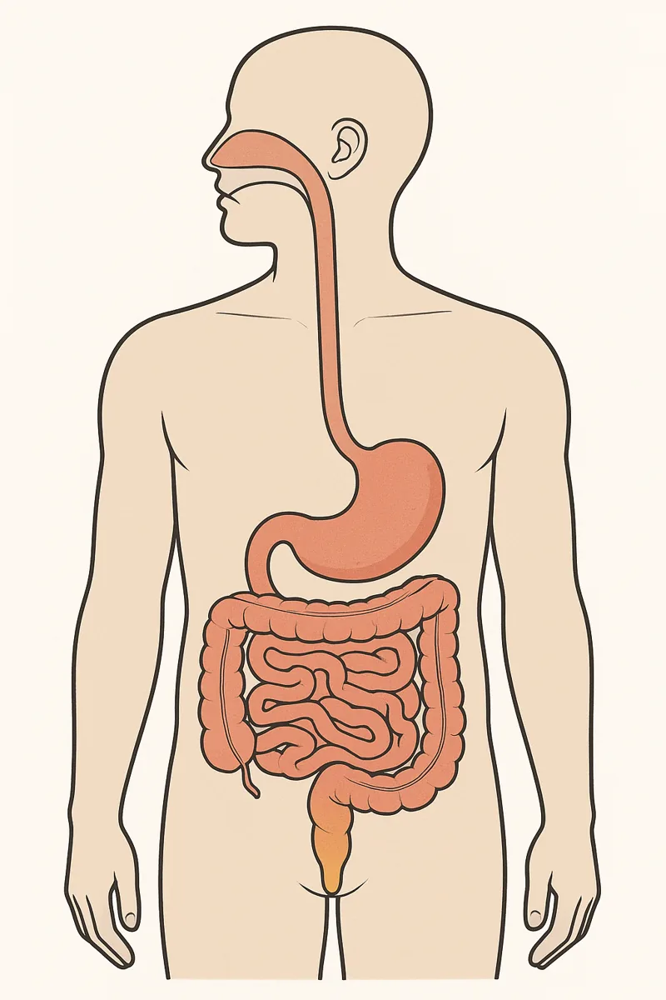
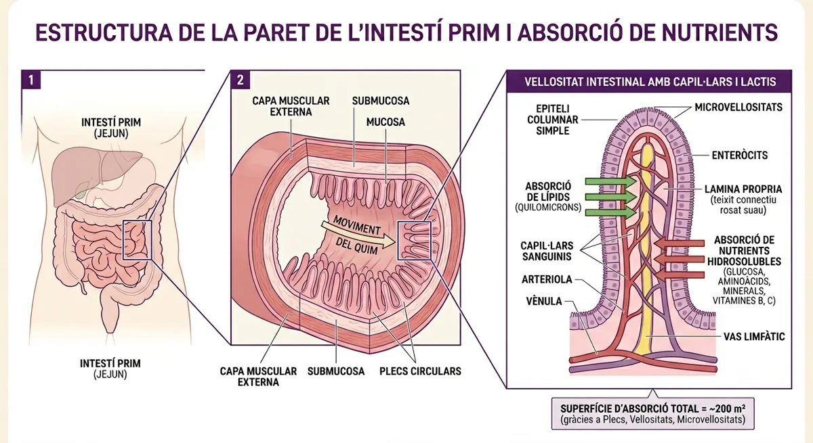

Fes la pràctica pas a pas i omple els mateixos apartats que la fitxa impresa.
Activa el que ja saps — no hi ha respostes dolentes.
Escriu-ho abans de començar. Al final podràs comparar-ho amb el que has après.
Al dibuix hi ha 7 parts marcades amb un número, en l'ordre pel qual passa el menjar.

Il·lustració del tub digestiu · els números marquen les 7 parts per les quals passa el menjar, en ordre · les glàndules annexes es treballen a la secció 3.
A l'estómac el menjar ja està desfet i convertit en quimo. Per quina raó, doncs, els nutrients NO passen a la sang allà i sí que ho fan a l'intestí prim? Dóna dos motius diferents.
Activitat d'escala 1:100 · cada metre real = 1 cm de llana.
Observa l'experiment de taula i completa les columnes buides.

La mitja de niló fa de paret amb vellositats: deixa passar el líquid i reté els trossos.
Cada fase es desbloqueja quan has fet els seus passos.
Aquí tens les teves dades i respostes agrupades per apartat de la fitxa. Copia-ho i passa-ho a la fitxa impresa.
Les seccions «Del budell al mitocondri», «La microbiota», «L'escala de Bristol» i els objectius finals les fas directament a la fitxa.